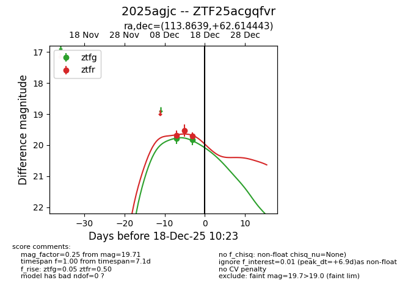
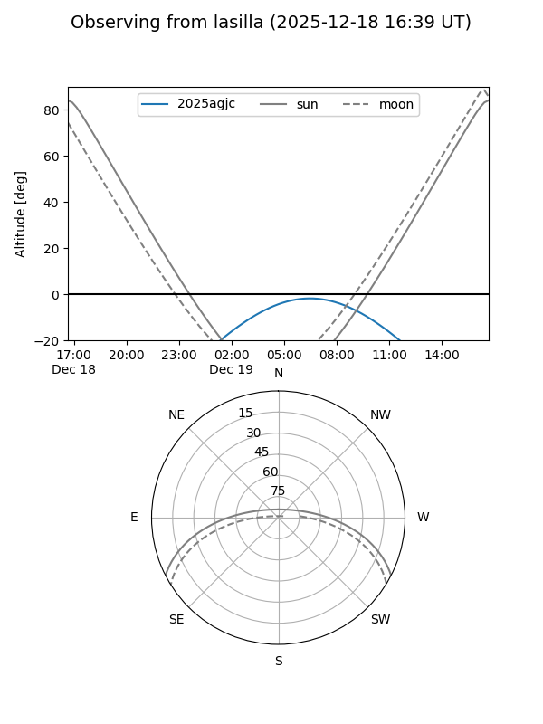
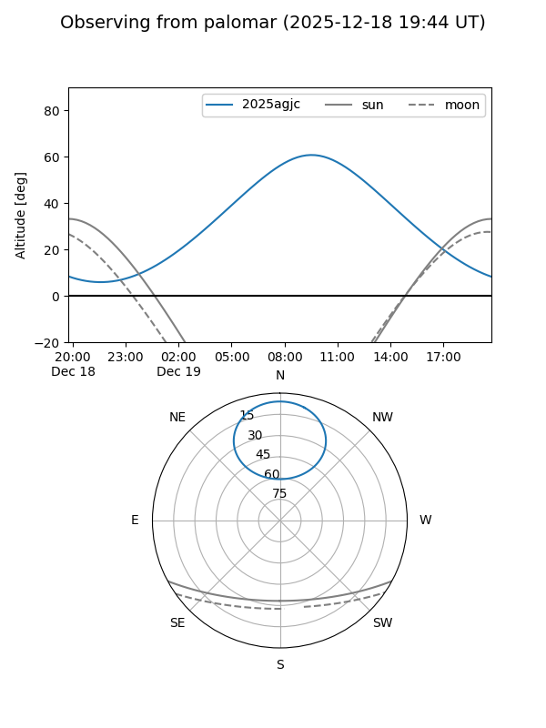
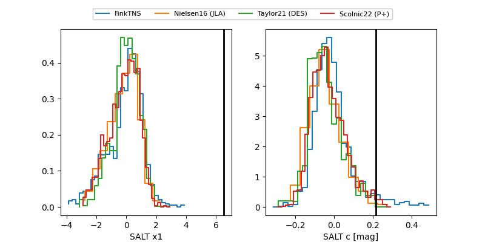

2025agjc
Target 2025agjc at 2025-12-19 08:39
Aliases and brokers:
FINK: fink-portal.org/ZTF25acgqfvr
Lasair: lasair-ztf.lsst.ac.uk/objects/ZTF25acgqfvr
ALeRCE: alerce.online/object/ZTF25acgqfvr
TNS: wis-tns.org/object/2025agjc
YSE: ziggy.ucolick.org/yse/transient_detail/2025agjc
alt names
ZTF25acgqfvr (ztf,fink_ztf)
2025agjc (tns,yse)
Coordinates:
equatorial (ra, dec) = 113.8639,+62.61444
equatorial (HMS+DMS) = 07:35:27.33,+62:36:51.99
galactic (l, b) = (153.9737,+28.88318)
Flags:
Photometry:
last ztfg=19.83, ztfr=19.62
2 ztfg, 4 ztfr detections
Lightcurve

Visibility


Additional plots
